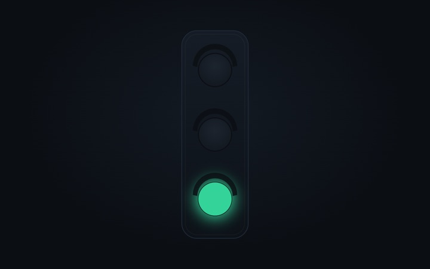
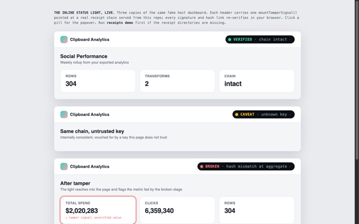

SIGNED RECEIPTS FOR VIBE-CODED DATA PIPELINES
You pulled the export. Your AI built the dashboard. Tamper Signal keeps receipts for the data behind it, so when anyone asks whether the numbers are still the real numbers, you don't have to guess. A small status light on your dashboard answers: green means nothing changed.
It can't tell you the data is right, but it can prove nobody changed it.
the monday morning problem
You know the moment. The deck says reach was up 12 percent. The client pulls up their own export and gets a different number. Suddenly the meeting is about your spreadsheet instead of your work, and your evening is three weeks of tabs, looking for where it drifted.
Here's the part nobody warns you about AI-built dashboards: when they go wrong, they don't crash. The assistant that built yours in an afternoon might quietly drop a few rows or count a column twice, and everything still looks finished. The chart renders. The numbers feel plausible. Nothing taps you on the shoulder.
Tamper Signal is the tap on the shoulder. From the moment you export to the moment your dashboard shows a number, your data carries receipts. One glance at the status light tells you the numbers are still exactly what you exported. And if someone asks? Pull up the receipts.
live demo · not a mockup
This is a pretend dashboard, like the ones you build. The small status light in its header is Tamper Signal, and it is really working: checking the receipts behind this page in your browser, right now. Use the buttons to see what happens when everything is fine, when something deserves a second look, and when a number has been changed.
not a screenshot: the status light below is live. click it ↘
Weekly rollup from your exported analytics · updated 2h ago
No tricks. Your browser is checking real receipts behind this page. On the tampered version, notice the status light doesn't just turn red: it reaches into the dashboard and flags the exact number that changed, and says by how much. That's the difference between an alarm and an answer.
how it works
The "add tamper signal" button at the top copies the instructions. Your assistant reads them and does the technical part. That's the whole point of having one.
From then on, every step between your export and your dashboard writes down proof of what the data looked like. Receipts are small files that travel with your project. You never have to open one, but you can always pull them up when someone asks.
The light is green, the data is clean. Nothing changed. Present with confidence.
The light is yellow, a human should look. Probably fine, but one thing couldn't be fully checked. It tells you which.
The light is red, the chain is broken. Something changed your numbers after the export. It points at the exact number and says by how much.
go deeper
THE STORY

The longer version of this page: why dashboards lie so quietly, and what it feels like when yours can finally prove itself.
read the post →SEE IT LIVE

The status light, the badge, the data table, and the inspector console, all running on real example data you can poke at.
open the demos →FOR DEVELOPERS & AI AGENTS
The README covers how it all works under the hood. AGENTS.md is the step-by-step playbook your AI assistant follows when you paste the prompt.
read the docs →It can't tell you the data is right, but it can prove nobody changed it. If the export itself was wrong, Tamper Signal will faithfully protect the wrong numbers; checking the source is still your job.
It also doesn't stop anyone from changing things. It makes sure changes can't hide. We think that's the honest version of trust: not a promise that nothing will ever go wrong, but proof of exactly what happened when something does. That's the only claim we make, and the technical docs hold us to it.